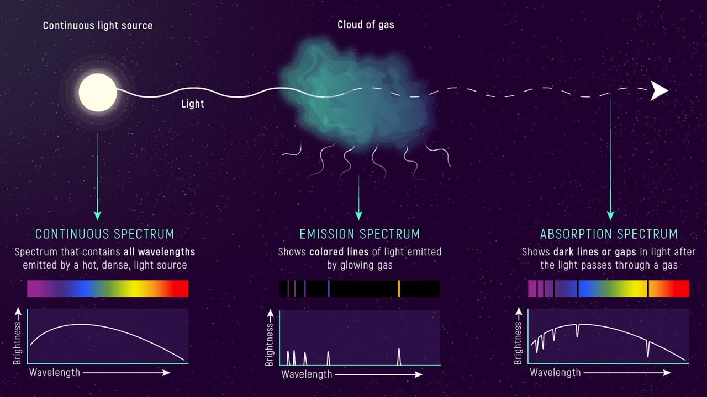

Para conocer cuál es la composición de las estrellas observamos la luz que nos llega de ellas.
El círculo de la izquierda será una estrella que emite luz. En el centro encontraremos una nube de gas frío que es calentada por la luz que llega y que también se queda con la energía de la luz de la estrella.

- CASO 1: Si miraras la luz de la estrella (sin nube en tu campo de visión)
- Vemos la luz de la superficie de la estrella, que emite de manera continua y tiene forma de joroba.
- La forma de esta distribución de luz se compara con una función (la de la distribución de un cuerpo negro) y nos da información interesante, como la temperatura de la superficie de la estrella.
- CASO 2: Si miraras la luz de la nube (perpendicular a la luz de la estrella):
- La luz (en forma de partículas llamadas fotones) elevarían la energía de los electrones de la nube de manera temporal, y cuando estos regresaran a sus estados de equilibrio, emitirían líneas de emisión.
- No vemos la luz de la estrella en esta posición, sino las líneas de emisión que nos da información de los elementos que tiene la nube.
- CASO 3: Si miraras la luz de la estrella que atraviesa la nube:
- Los electrones de la nube de gas fría son impactados por fotones (partículas de la luz de la estrella). Estos hacen que los electrones asciendan un nivel y generen líneas de absorción.
- Estas líneas nos dan información de los elementos de la nube (en forma de líneas de absorción), que se encuentran superpuestos a la forma continua de luz de la estrella.
NOTA: Usando instrumentos como una red de difracción o un espectrómetro, podemos identificar los elementos químicos que ha encontrado la luz en su viaje desde el centro de la estrella hasta nosotros.